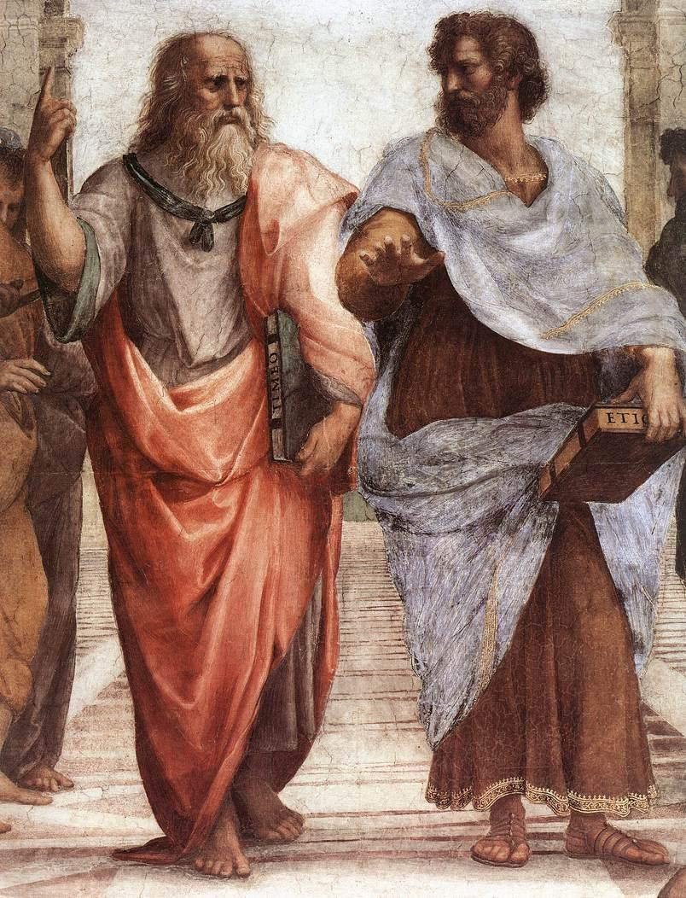

「模仿」在柏拉圖那裡是貶義：藝術只複製事物的外觀，離真理很遠；到了亞里斯多德，模仿變成人學習的天性，悲劇模仿的是「行動」而不是外表。今天要學會分辨這兩種模仿，並用它來看一齣戲：好的模仿靠的是事件的安排，不是道具做得多像。
【傳說，見於史料】古羅馬作家老普林尼（Pliny the Elder）在《博物志》（Naturalis Historia，約西元 77 年）第 35 卷記載了一場繪畫比賽。古希臘畫家宙克西斯（Zeuxis）畫了一串葡萄，逼真到鳥飛來啄。對手帕拉西奧斯（Parrhasius）拿出一幅畫著布簾的畫。宙克西斯得意地要對方「把簾子拉開，讓大家看畫」，才發現簾子本身就是畫。他認輸說：我騙過了鳥，你騙過了一個畫家。
普林尼自己用「據說」來講這件事，而且兩幅畫都沒有留下，所以這是一則流傳了兩千年的軼事，不是可以查核的事件。值得注意的是故事的評分標準：誰能讓觀看者把畫當成真的，誰就贏。這正是柏拉圖眼中的「模仿」，也是今天要拆開檢查的想法。
柏拉圖：模仿是影像的影像【經典理論】
柏拉圖在《理想國》（Republic，約西元前 375 年）第十卷借蘇格拉底之口，舉了一個床的例子（見圖 1）。世上有三種床：第一種是床的「理型」（Form），只有一個，是神造的；第二種是木匠看著理型做出來的床；第三種是畫家畫的床。畫家沒有看著理型，他看的是木匠的床，而且只畫出它從某個角度看起來的樣子。所以柏拉圖主張，畫家與悲劇詩人都是「離國王與真理三層」的模仿者（Jowett 英譯：thrice removed from the king and from the truth）。
圖 1｜柏拉圖的三種床：理型、木匠的床、畫家的床。來源：本課程依柏拉圖《理想國》第十卷（Jowett 英譯）繪製。授權：本課程自製圖解。
他還說了一個尖銳的比喻：如果模仿就是複製外觀，那拿一面鏡子到處轉，很快就能「造出」太陽、天空、大地和你自己。言下之意是，逼真不等於懂得。畫家能畫出鞋匠，卻不必懂得做鞋。
柏拉圖反對詩與戲劇還有第二個理由：情緒。他主張詩會「餵養並澆灌」激情（feeds and waters the passions），讓本該被理性管住的悲傷、憤怒、慾望佔上風。因此他設想的理想城邦裡，只允許讚美神的頌歌與讚美好人的詩，其餘的詩人要送走。他也承認這是哲學與詩之間「古老的爭執」。
亞里斯多德：模仿是學習，悲劇模仿行動【經典理論】
柏拉圖的學生亞里斯多德在《詩學》（Poetics，約西元前 335 年）中翻轉了評價。第四章主張，模仿是人從小就有的天性，人是最會模仿的動物，最初的知識也是透過模仿學來的。他舉的證據很日常：屍體或最卑賤的動物，本身看了難受，但畫得精確時，我們卻喜歡看。原因是學習本身就是最大的樂趣，看畫時我們在「認出」這是什麼。
更關鍵的是第六章。亞里斯多德把悲劇定義為對一個嚴肅、完整、有一定長度的行動的模仿，以演出而非敘述的方式，透過憐憫與恐懼使這些情緒得到「katharsis」。他接著說，悲劇模仿的不是人，而是「行動與生活」（Butcher 英譯：not of men, but of an action and of life），所以六個要素裡最重要的是情節，情節是悲劇的「靈魂」，舞台場面（spectacle）反而排在最後，是最不屬於詩藝的部分。
第九章再推一步：詩比歷史更有哲學性，因為歷史說已經發生的個別事件，詩說「可能發生」的事，表達的是普遍的道理。第二十五章則說，詩人可以模仿事物過去或現在的樣子、人們所說所想的樣子，或應該有的樣子。換句話說，亞里斯多德的模仿不是照相，而是有選擇、有結構的再現（見圖 2）。
圖 2｜兩種模仿觀的比較。來源：本課程依柏拉圖《理想國》第十卷、亞里斯多德《詩學》第四、六章（Butcher 英譯）繪製。授權：本課程自製圖解。

圖 3｜拉斐爾〈雅典學院〉局部：左為柏拉圖，手指向上；右為亞里斯多德，手掌朝向地面。常見的解讀是一人指向理型、一人指向經驗世界，這是後世的詮釋，不是畫家留下的說明。來源：Raphael，The School of Athens（局部），1509–1511。授權：Public domain，來源頁面
索福克勒斯《伊底帕斯王》（Oedipus Tyrannus，約西元前 5 世紀後半）【經典理論＋作品分析】
亞里斯多德在《詩學》裡反覆拿這齣戲當範例。故事大意：底比斯國王伊底帕斯為了解除城中瘟疫，追查殺害前王的兇手，最後發現兇手就是自己，而他娶的王后正是自己的母親。
亞里斯多德特別點名其中一場（第十一章）：一位從科林斯來的信使帶來「好消息」，伊底帕斯以為的父親科林斯國王已經過世，請他回去繼位。伊底帕斯仍害怕預言說他會娶母親，信使為了讓他安心，說出：你根本不是那對夫婦親生的，是我把你從山上抱來的。本來要解除恐懼的話，反而揭開了真相。亞里斯多德稱這種「行動轉向反面」為逆轉（peripeteia），稱「從無知到知」為發現（anagnorisis），並說兩者同時發生時效果最好，正如《伊底帕斯王》。
用今天的兩種模仿觀來拆這一場：
亞里斯多德在第十四章給了一個可以自己驗證的標準：好的情節即使不靠眼睛，只聽人把故事講一遍，也會讓人戰慄與憐憫，他說聽《伊底帕斯王》的故事就是如此。靠舞台場面製造驚嚇，他認為是比較不高明的做法。這就是「模仿行動」的意思：被模仿的是事情如何發生，而不是東西看起來像不像。
盧米埃兄弟《火車進站》（L'Arrivée d'un train en gare de La Ciotat，1895 年拍攝，1896 年首映）【史料；恐慌故事：已被反駁】
這部不到一分鐘的短片，只拍了一列火車斜斜駛進月台、乘客上下車（見圖 4）。電影史常講一個故事：首映時觀眾以為火車要衝出銀幕，尖叫逃到後排。這和宙克西斯的鳥是同一型的故事，都是用「騙過觀眾」來證明模仿的成功。
圖 4｜《火車進站》畫面。來源：Auguste and Louis Lumière，L'Arrivée d'un train en gare de La Ciotat，1895。授權：Public domain（Wikimedia Commons 標示為美國公有領域），來源頁面
但這個故事已被反駁。電影史學者 Martin Loiperdinger 在〈Lumière's Arrival of the Train: Cinema's Founding Myth〉（The Moving Image 第 4 卷第 1 期，2004）中指出，找不到任何當時的報導記載觀眾恐慌，並認為這是電影的「創始神話」。更早，Stephen Bottomore 在〈The Panicking Audience? Early cinema and the 'train effect'〉（Historical Journal of Film, Radio and Television，1999）整理了早期觀眾被嚇一跳的紀錄，但認為「觀眾以為火車是真的」主要是一種流傳的迷思。（兩篇原文未能全文開啟，依期刊索引與 Ray Zone 2004 年的書評。）另外，常見說法稱這部片在 1895 年 12 月 28 日巴黎首場放映中播出，這也與該場的節目單不符。
對照劇場那一場，可以看見兩種模仿的差別：《火車進站》幾乎沒有情節，它的吸引力在於「動態影像竟然這麼像」，屬於柏拉圖意義的外觀模仿；而後來的電影之所以能讓人看兩個小時，靠的是亞里斯多德所說的情節安排。傳說讓我們記住的是前者，但讓電影成為敘事藝術的是後者。
看（5 分鐘）：找一張家裡的椅子。站在三個不同位置看它：正面、側面、從上往下。每個位置看一分鐘，注意哪些部分在某個角度完全看不見。這就是柏拉圖說畫家「只畫出某個角度的樣子」。
做（10 分鐘）：
回顧（5 分鐘），寫下答案：
延伸閱讀：Stephen Halliwell, The Aesthetics of Mimesis: Ancient Texts and Modern Problems（Princeton University Press, 2002），系統整理從柏拉圖到後世的模仿論。